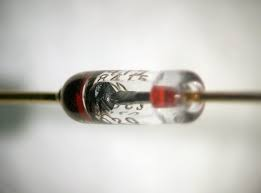
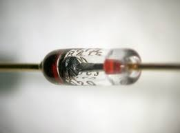
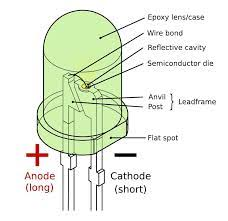
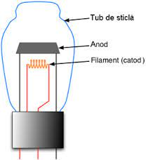
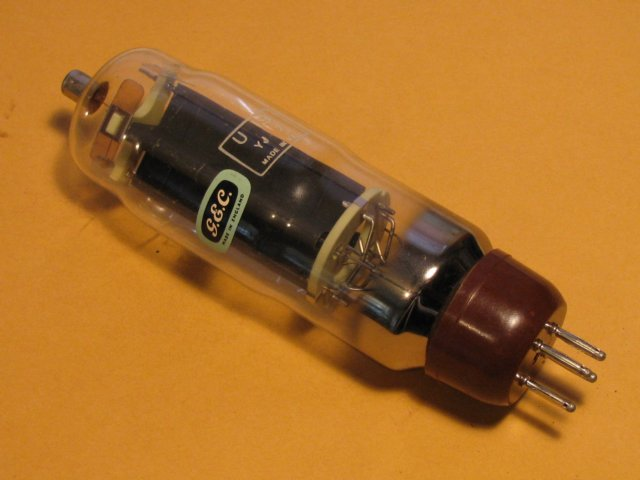

O diodă este un dispozitiv electronic cu doi terminale care permite curentului electric să circule doar într-o singură direcție. Dioda este polarizată, adică are un terminal pozitiv și unul negativ. Ea permite trecerea curentului electric atunci când este polarizată în direcția sa directă și blochează trecerea curentului când este polarizată în direcția sa inversă. Principiul de funcționare al diodei se bazează pe bariera de potențial și pe caracteristicile semiconductoarelor, de obicei din siliciu sau germaniu. Dioda poate fi utilizată într-o varietate de aplicații, cum ar fi redresarea curentului alternativ în curent continuu în surse de alimentare, protecția împotriva polarității inversate în circuite electronice și multe altele.
 

LED este prescurtarea pentru "Light Emitting Diode" (diodă care emite lumină). Este un dispozitiv electronic semiconductor care convertește energia electrică în lumină. LED-urile sunt folosite într-o varietate de aplicații, de la indicatoare luminoase și afișaje până la iluminat de interior și exterior. Principiul de funcționare al unui LED este similar cu cel al unei diode convenționale, dar în loc să emane semnal electric, LED-ul emite lumină atunci când este traversat de curent electric. LED-urile sunt eficiente energetic și sunt disponibile într-o gamă largă de culori și luminozități, ceea ce le face extrem de versatile în diverse aplicații. De asemenea, LED-urile au o durată de viață lungă și sunt mai rezistente la șocuri și vibrații decât alte surse de lumină, cum ar fi becurie incandescente sau becurile fluorescente compacte. Din aceste motive, LED-urile au devenit foarte populare în tehnologia de iluminat modernă.
O diodă cu vid este un tip de diodă electronică care utilizează un tub vidat pentru a permite sau a bloca trecerea curentului electric într-o singură direcție între anod și catod. Aceste diode sunt construite utilizând o anodă (terminalul pozitiv) și un catod (terminalul negativ) într-un tub vidat sau cu gaz rar la presiune redusă. Dioda cu vid a fost utilizată extensiv în istoria tehnologiei electronice, inclusiv în primele etape ale dezvoltării electronicii, înainte ca diodele semiconductoare să devină predominante. Totuși, odată cu avansul tehnologiei semiconductoare, diodele cu vid au devenit mai puțin comune în multe aplicații practice, deși încă mai sunt folosite în unele dispozitive specializate și în electronica de mare putere. Principiul de funcționare al diodei cu vid este similar cu cel al diodei semiconductoare, în sensul că permite curentului să circule doar într-o singură direcție. CU toate acestea, diodele cu vid utilizează efecte fizice diferite și materiale diferite față de diodele semiconductoare.
 